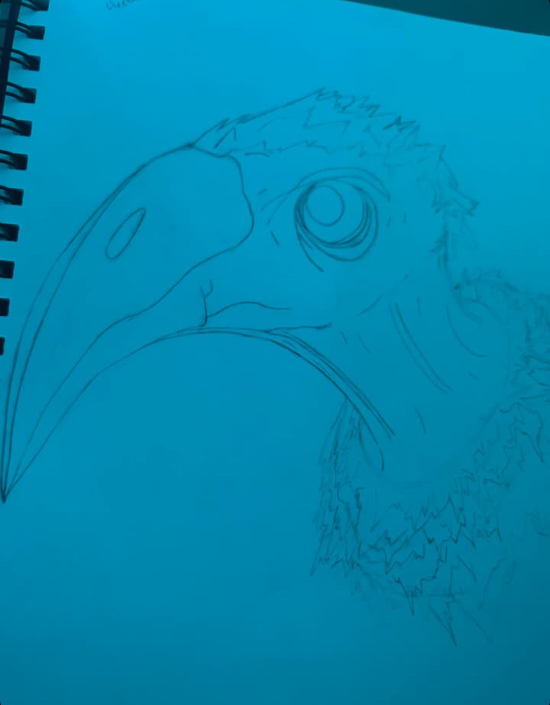

pigeon

sooo i had just started practicing my birds when i accidentaly mad a pigeon and was like hmmmm thats funny
vulture
This was my frist ever draft at drawing a vulture and ive never done better this is the best i ever drew for the vulture and it annoys me because it was the rough draft that looked amazing and not the project
frog

i was just doing some random drawings in my room and my girlfriend asked me if i could try drawing a frog and i was like yeahh, ill try and this is what I created
silly monster

i was in work one day and my manager had allowed me to bring one of my small drawing books into work so i was just drawing all day and this random thought entired my mind to created a silly monster and i did.